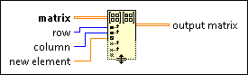

Set Matrix Elements Function
Owning Palette: Matrix Functions
Requires: Base Development System
Sets one or more elements in matrix at the indexes you specify in row and column.
The row and column inputs specify row and column indexes. For example, if you wire numeric scalar values i and j to row and column, respectively, these inputs correspond to a single matrix element at location (i, j).
The connector pane displays the default data types for this polymorphic function.
Details

 Add to the block diagram Add to the block diagram |
 Find on the palette Find on the palette |
 |
matrix must be a 2D array of any numeric type or a real or complex matrix.
|
 |
row must be an integer, a floating-point numeric, a 1D array of integers, or a 1D array of a floating-point numeric.
The default is a 1D array of integers that contains all row indexes.
|
|
column must be an integer, a floating-point numeric, a 1D array of integers, or a 1D array of a floating-point numeric.
The default is 0.
|
 |
new element is the scalar, matrix, or 2D array that replaces one or more elements in matrix.
|
 |
output matrix is the matrix with the new elements. If matrix is an empty matrix or array, output matrix resizes to receive the new elements.
|
Add additional row, column, and new element inputs and output matrix outputs by resizing the node.
If you wire a 2D array to matrix, output matrix returns an array even if you wire a real or complex matrix to new element.
If new element is a scalar or a matrix, output matrix returns matrix with the element at location (i, j) set to the new element. If the location is outside the matrix and i and j are non-negative, matrix resizes to accept the new scalar or matrix. If the new matrix is larger than the largest submatrix at the starting location, the matrix also resizes. If you increase the row or column dimensions of matrix, the function returns 0 at each exterior location.
If you wire a 1D array of numeric type to row or column, the function sets one matrix element for every location specified. These locations are determined by pairing each row index in row with every column index in column. For example, passing the array of integers {1, 2, 4} to row and the integer {5} to column modifies matrix elements at indexes (1, 5), (2, 5), and (4, 5).
If you do not wire row or column, the function assigns the new element to the input matrix starting at index (0, 0), which is equivalent to wiring 0 to matrix. If you do not wire an input to new element, the function sets the element at location (row, column) in matrix to 0.
Wiring Empty Input Values
If you wire an empty 1D array to row or column, output matrix returns matrix.
Indexing Duplicate Values
If you wire duplicate values to row or column and you wire a matrix to new element, the order in which the function sets the new matrix elements determines output matrix.
Indexing Outside the Input
If you wire a negative value to row or column, the function ignores all locations specified by the negative index. If new element is a matrix, the function ignores the new matrix elements that fill these locations as well.
If you wire a value to row or column that is greater than or equal to the row or column dimension of matrix, matrix resizes to receive elements at the corresponding location. If you increase the row or column dimensions of matrix, the function returns an invalid operation value at each exterior location.
Wiring the New Element Input
If you wire a matrix to element that has a dimension larger than matrix, matrix resizes to receive the new matrix elements. If you increase the row or column dimensions of matrix, the function returns an invalid operation value at each exterior location.
If you wire a matrix to new element in which the row or column dimensions exceed the respective number of row indexes in row or column indexes in column, the function ignores the additional row and column elements.
If you wire a matrix to new element in which the number of row indexes is less than the row dimension of the new matrix and you wire a 1D array to row, the function inserts an invalid operation value at each exterior location.
If you wire a matrix to new element in which the number of column indexes is less than the column dimension of the new matrix and you wire a 1D array to column, the function fills in an invalid operation value at each exterior location.
If you wire an input to new element with a different numeric type than matrix, the function converts matrix to a new numeric type if the function cannot set new elements without losing precision. If the function can set new elements without losing precision, the numeric type of new elements converts to the numeric type of matrix.
If you wire a real or complex matrix to matrix, output matrix returns a real or complex matrix. The table of special coercion cases shows the situations when output matrix is different from matrix.